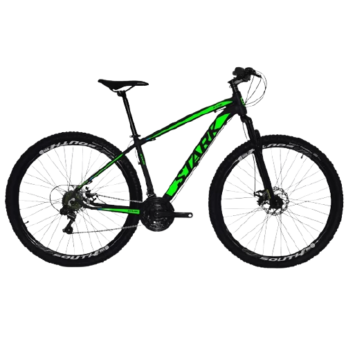
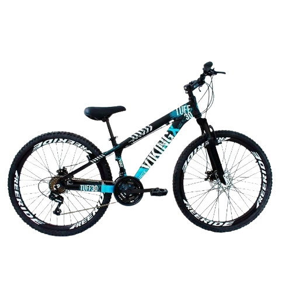
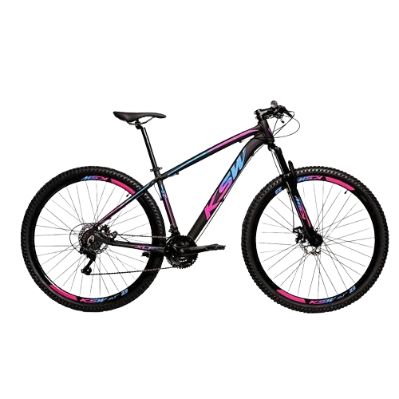

Bicicleta Aro 29 DROPP Sport AÇO 21v Câmbio Shimano R$ 1.299,00
0

Descrição
Bicicleta Dropp Aro 29'' com o Quadro em Aço e Suspensão Dianteira de 80mm em Aço, ótimo custo benefício! Equipada com Suspensão Dianteira de 80mm, freio a disco mecânico de 160mm e Aro Aero Parede Dupla com adesivos personalizados e um conjunto de 21 Velocidades Indicada para Iniciantes, recomendado para passeios com total conforto e segurança sem perder o estilo! Atenção! Bicicleta não recomendada para Trilhas e Manobras.
Nome: Bicicleta Aro 29 DROPP Sport AÇO 21v Câmbio Shimano Freio a Disco Mecânico com Suspensão
Gênero: Unissex
Modalidade: Cicloturismo
Aro: 29
Marchas: 21
Indicado para: Dia a Dia
Material do Quadro: Aço
Modelo e Composição do Garfo: Garfo Suspensão 80mm de curso Preto
Pneus: Pneu 29x2.10
Marca e Composição do Selim: Preto
Marca e Composição do Pedivela: Tripo Reduzido 24/34/42
Tipo de Freio: Freio a Disco Mecânico 160mm
Marca: DROPP
Bicicleta Freeride Aro 26 Freio à Disco 21V VikingX R$ 1.529,10
0

Descrição
Foi projetada para quem quer uma bike de personalidade e estilo inigualável. Ela oferece ao ciclista quadro diferenciado e design arrojado e exclusivo. Com qualidade, ela vem equipada de com 21 velocidades, permitindo ao ciclista a escolha da marcha ideal de acordo com o local. O design moderno pode ser observado no quadro da bike e os pneus são confeccionados em MTB com aro 26, garantindo segurança total a cada manobra em qualquer tipo de terreno.
Bicicleta Alumínio Aro 29 Ksw 24 Velocidades Freio a Disco KRW16 R$ 1.500,00

A KSW é uma bicicleta Aro 29 com freio a disco desenvolvida para passeios e um bom começo nas primeiras trilhas da categoria MTB.
Quadro em alumínio 6061
Abraçadeira alumínio de selim 31,8mm
Alavancas de câmbio ez-fire 8 velocidades
Aro aéro 29 parede dupla 36f
Caixa de direção semi-integrado
Câmbio dianteiro importado
Cambio traseiro importado
Pedivela aço coroa triplo revestido
Canote de selim 27.2mm com carrinho
Corrente 8 velocidades index
Cubo rosca com blocagem
Espaçador alumínio 10 mm
Garfo suspensão
Guidão alumínio 31.8mm reto
Kit cabo com conduiter com teflonn
Mesa alumínio 31.8mm
Movimento central rolamentado 122mm
Pedal em nylon preto
Pinça de freio a disco com rotor de 160mm mecânico
Pneu 29
Raio 285x2.0mm aço preto
Roda livre 8 velocidades
Selim mtb.